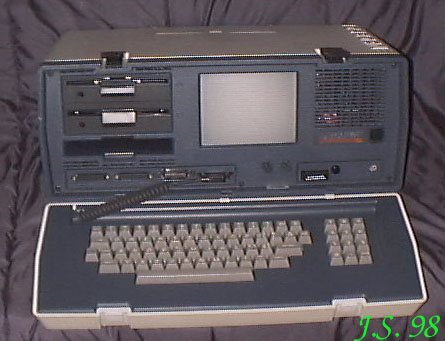

OSBORNE COMPUTER CORPORATION - firma, która już w 1983r splajtowała.
Dziwne. U nas dopiero było "słychać pierwsze strzały" rewolucji komputerowej, a w USA
niewidzialna ręka rynku rozkładała (i tak już podobno gnijący) kapitalizm.
Ale komputery tej firmy
były wspaniałe, przenośne, z wbudowanym monitorem i oczywiście pracowały pod CP/M, który
wówczas święcił tryumfy na świecie.
W kolekcji mam dwa egzemplarze Osborne : Vixen i
Executive. Vixen jest kaleki, brak mu maskownicy ekranu, więc go nie pokazuję, aby nie
wzbudzać obrzydzenia widokiem bebechów ;)
EXECUTIVE

Procesor Z80 / 4MHz.
RAM 128kB.
ROM 8kB.
Procesor graficzny - brak.
Rozdzielczość maksymalna ?
Grafika niedostępna.
Tekst 24 linie po 80 znaków.
Porty: równoległy, szeregowy.
Zewnętrzne peryferia: drukarka, IEEE488.
Dźwięk: brak
|